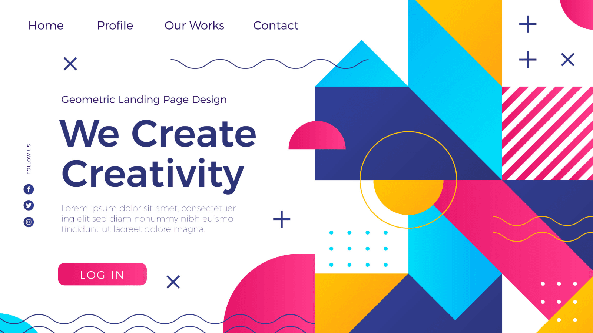
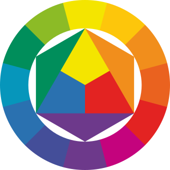
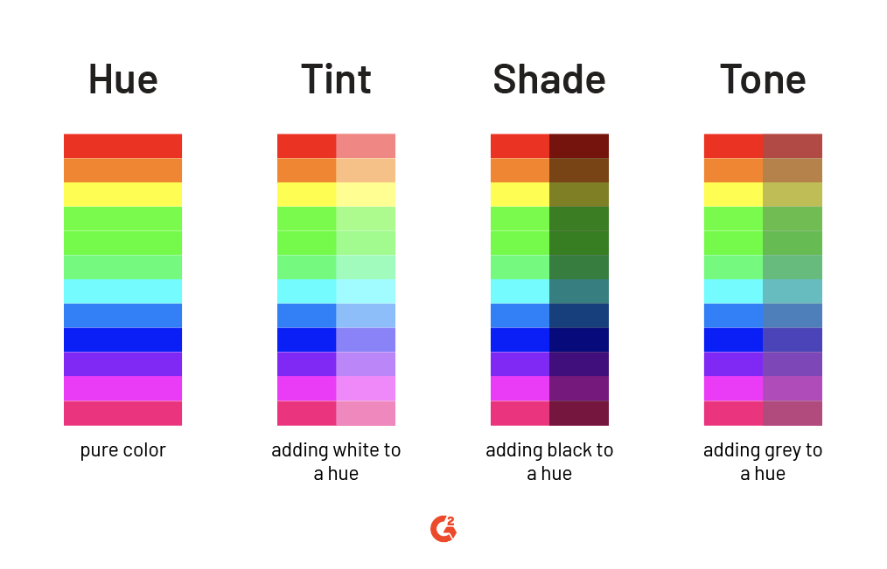
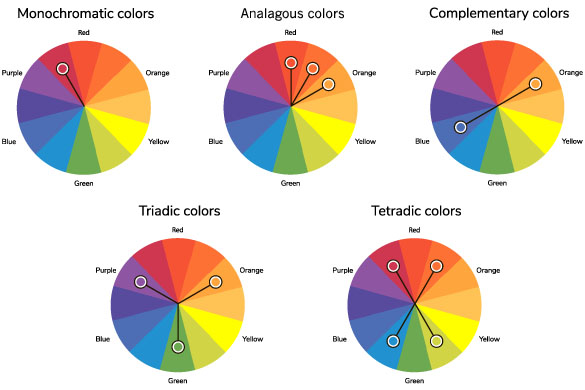
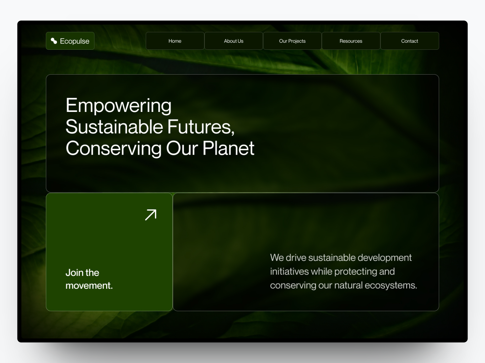
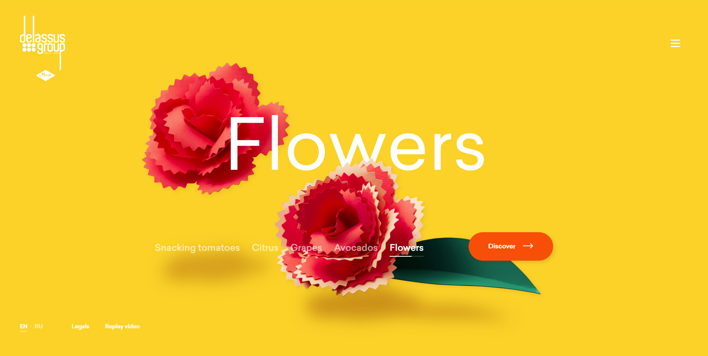
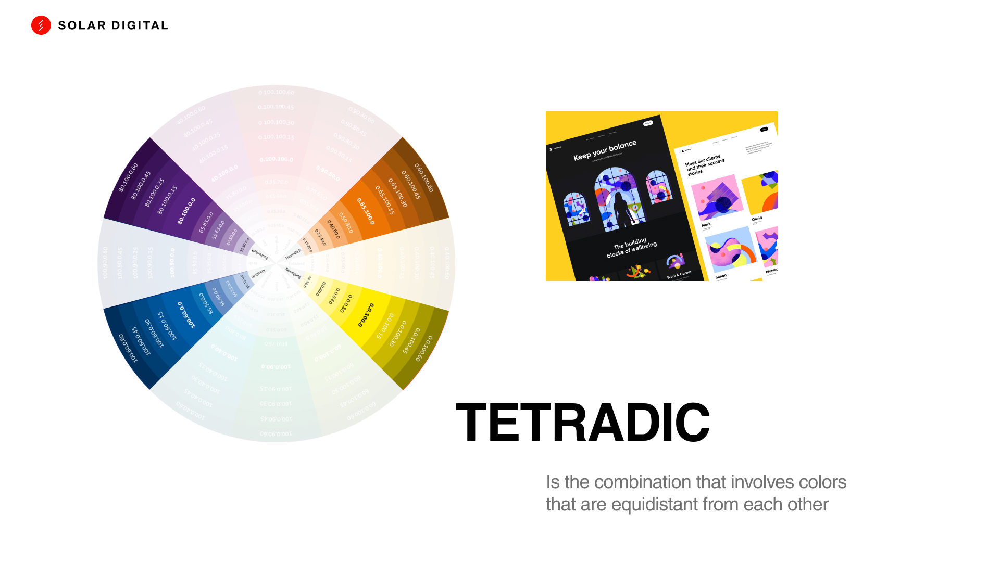
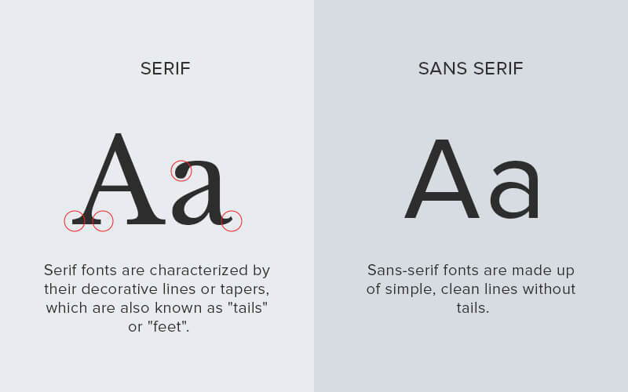

Урок 8: Създаване на графичен модел на уеб страница (mockup)
Mockup
Графичният модел (mockup) е визуален прототип на уеб страница, който дизайнерът създава и представя за одобрение преди реалното ѝ изграждане. Той показва как ще изглежда страницата: подредбата на съдържанието, избраните шрифтове, цветовата схема, изображенията, иконите и бутоните. Обикновено mockup е статичен и служи за оценка на външния вид; интерактивният прототип показва и как ще работят действията и навигацията.
Създаването на графичен модел включва оформяне на избрания схематичен дизайн (wireframe) – структурата и местата на елементите – с конкретни шрифтове, цветове и графични компоненти. Така дизайнерът превръща схемата в цялостен визуален проект, по който възложителят може да даде обратна връзка и одобрение.

В картинката се виждат решенията, които дизайнерът представя за одобрение:
- Подредба, основана на избрания wireframe: меню в горната част, икони вляво, заглавие и текст в основната област и бутон под тях. Показан е вече оформеният графичен модел; самият wireframe е предходната схема на тази структура.
- Шрифтове и текстова йерархия: голямо, удебелено заглавие и по-дребен текст за описанието и навигацията.
- Цветова схема: светъл фон с акценти в синьо, розово и жълто.
- Графични елементи: геометрични фигури, декоративни линии и икони за социални мрежи.
- Бутони и навигация: външният вид и разположението на менюто и бутона „LOG IN“.
Използване на цветовете в уеб дизайна
При избора на цветова схема за уеб сайт се определя кои цветове ще предадат подходящото послание на посетителите. При изграждане на графичния дизайн трябва да се избере цветова гама, в която да се развият страниците на уеб сайта. Тя трябва да бъде съобразена с тематиката на сайта, да не е натрапчива и отблъскваща. Внимателният и балансиран подбор на цветовете може да създаде великолепна композиция, тъй като цветовете са първото нещо, което потребителите забелязват на страниците. Ярък акцент може да открои малък важен елемент. За учебния модел започнете с 3–4 основни роли на цветовете; това е практичен ориентир, а не универсално ограничение.
Връзката между цветовете може да се представи в кръгла диаграма с 12 цвята, наречена колело на цветовете. В класическия художествен модел RYB тези цветове се получават от 3 основни, 3 вторични и 6 третични цвята:
- Основни: червено, жълто и синьо.
- Вторични (второстепенни): червено + жълто → оранжево; жълто + синьо → зелено; синьо + червено → виолетово.
- Третични (междинни): получават се от смесването на основен цвят със съседния му вторичен цвят – жълто-оранжево, червено-оранжево, червено-виолетово, синьо-виолетово, синьо-зелено и жълто-зелено.
Така 3 + 3 + 6 = 12. В този кръг „чисти цветове“ означава цветове без добавено бяло, черно или сиво. Между тях има още много междинни цветове: 12 е удобно деление, а не фундаментален природен брой цветове.
При разделяне на кръга на 12 равни части получаваме 360° / 12 = 30° между съседните позиции. Това улеснява избора на цветови схеми: допълващите се цветове са срещуположни (180°, или 6 позиции), триадите са през 120° (4 позиции), а аналогичните цветове са съседни.

Цветови модели: RGB, RYB и CMYK
Цветовият модел описва как се изграждат или смесват цветовете, а цветовата схема е подборът на цветове за даден дизайн.
- RGB (Red, Green, Blue): червено, зелено и синьо. Това е адитивно смесване на светлина, използвано от екраните и в уеб дизайна. Червена + зелена светлина дава жълто, зелена + синя – циан, синя + червена – магента. Трите светлини заедно при пълна интензивност дават бяло.
- RYB (Red, Yellow, Blue): червено, жълто и синьо. Това е традиционен художествен модел за смесване на бои и пигменти, върху който е изграден класическият 12-цветен кръг. Смесването е субтрактивно: пигментите поглъщат част от падащата светлина. Реалният резултат зависи и от конкретните бои.
- CMYK (Cyan, Magenta, Yellow, Key/Black): циан, магента, жълто и черно. Това е субтрактивен модел за печат: мастилата поглъщат част от светлината, отразена от хартията. Черното мастило осигурява плътно черно и по-ясни детайли.
Опитайте сами: ColorMixy – онлайн инструмент за смесване на цветове. Сравнете смесването на светлина (RGB) със смесването на бои (RYB) и мастила (CMYK). Проверете например защо червено и зелено дават жълто при събиране на светлина, а смесването на бои дава различен резултат.
Цветовете могат да се разделят на неутрални, топли и студени.
- Неутрални цветове са бяло, черно и сиво (смес от бяло и черно). Те могат да участват във всяка цветова схема.
- Като топли обичайно се възприемат червените, оранжевите и жълтите тонове; усещането зависи и от конкретния оттенък и контекста. Те се асоциират със слънцето и се смята, че са активни.
- Като студени обичайно се възприемат сините и много зелени и виолетови тонове; границите са условни. Те се асоциират с водата и небето и се приемат за успокояващи.
Нюанс, сянка и тон (Tint, Shade, Tone)
От един чист цвят (hue) можем да получим различни вариации, като добавяме бяло, черно или сиво. Така разширяваме палитрата, без да избираме нов основен цвят:
- Нюанс (tint) – получава се, когато към чистия цвят добавим бяло. Цветът става по-светъл; например червено + бяло → розово. Светлите нюанси често се наричат пастелни.
- Сянка (shade) – получава се, когато към чистия цвят добавим черно. Цветът става по-тъмен; например от червено получаваме тъмночервено.
- Тон (tone) – получава се, когато към чистия цвят добавим сиво (смес от бяло и черно). Цветът става по-приглушен и по-малко наситен; например от червено получаваме приглушено сивкаво-червено.

В уеб дизайна: тези вариации са полезни за създаване на монохромна цветова схема – например светъл син фон, син бутон и тъмносин текст. На екрана задаваме получените цветове чрез RGB стойности, вместо физически да смесваме бои.
Цветови схеми (Color schemes)
Цветова схема (color scheme) е подборът и съчетаването на цветове в един дизайн. Тя определя кои цветове ще използваме за фон, текст, бутони и акценти, така че страницата да изглежда цялостна и да е лесна за възприемане.
Основните видове цветови схеми се определят според отношенията между цветовете в цветовия кръг:

- Монохромна (Monochromatic): използва един основен цвят и негови по-светли, по-тъмни или по-приглушени вариации. Например различни нюанси на синьото. Създава единство; контрастът се постига чрез разлики в светлотата и наситеността.

Пример за монохромна схема (Monochromatic): в дизайна на Ecopulse фонът, панелите и акцентите използват светли и тъмни вариации на зеленото. Белият текст е неутрален и осигурява контраст, без да добавя втори цветен акцент. Източник: Ashwin Pradeep Kumar – Dribbble. - Аналогична (Analogous): използва съседни цветове в кръга, например жълто, жълто-оранжево и оранжево. Един цвят е основен, а останалите го допълват.

Пример за аналогична схема (Analogous): секцията „Flowers“ на Delassus съчетава жълт фон, оранжев бутон и червени цветя. Жълтото, оранжевото и червеното са съседни цветове в класическия цветови кръг и създават единно, топло усещане. Източник: CSS Winner – Delassus. - Допълваща (Complementary): използва два срещуположни цвята в кръга, например синьо и оранжево в класическия RYB кръг. Създава силен цветови контраст; единият цвят може да преобладава, а другият да служи за акцент.
Пример за допълваща схема (Complementary): синият фон е съчетан с оранжев бутон и оранжева долна лента. Синьото и оранжевото са срещуположни в класическия RYB цветови кръг. Контрастът между тях кара бутона да изпъква и насочва вниманието към действието; белият текст служи като неутрален елемент. Източник: Upwork. - Триъгълна / триадна (Triadic): използва три цвята на равни разстояния в кръга – през 120°. Например червено, жълто и синьо в RYB кръга. За баланс избираме един водещ цвят и два допълващи акцента.
Пример за триадна схема (Triadic): този учебен пример от Upwork разпределя жълто, синьо и пурпурно между горната лента, основната област и долната секция. Трите цветови акцента придават разнообразие и ясно разграничават областите. При изграждане на триадна палитра избираме три позиции през 120° в използвания цветови кръг; конкретните оттенъци зависят от избрания кръг. Източник: Upwork. - Четириъгълна / тетрадна (Tetradic / Double complementary): използва четири цвята, подбрани в две допълващи се двойки. Дава повече възможности за разнообразие, но изисква внимателен баланс между основните цветове и акцентите.

Пример за тетрадна схема (Tetradic / Double complementary): илюстрацията показва четири цвята върху цветовия кръг и приложението им в уеб страници. Цветовете образуват две допълващи се двойки. Показаният квадратен вариант използва позиции през 90°; при правоъгълния вариант разстоянията между съседните позиции се редуват, но срещуположните цветове от всяка двойка остават през 180°. За визуален баланс един цвят може да преобладава, а останалите да служат като акценти. Източник: IT Rating.
Изборът на цвят за фон е важен за доброто възприемане на текстовата информация. Текстът трябва да контрастира с фона, за да бъде лесен за четене. Препоръчва се при светъл фон текстът върху него да е тъмен и обратно – при тъмен фон цветът на текста да е светъл.
Изберете палитра за вашия mockup: Coolors – популярни палитри с 3 цвята. Разгледайте готовите цветови комбинации и изберете палитра, която подхожда на тематиката на вашия сайт. Определете кой цвят ще бъде основен, кой ще го допълва и кой ще използвате за акценти като бутони и важни елементи. Проверете дали текстът се чете ясно върху избрания фон.
Палитра с три цвята не е непременно триадна схема: броят на цветовете показва колко цвята използваме, а видът на схемата зависи от отношенията им в цветовия кръг. Опитайте да определите дали избраната комбинация е монохромна, аналогична, триадна или друг вид.
„Цветови схеми“ е различен термин от „цветови модели“
Цветови схеми (color schemes) и цветови модели (color models) описват различни страни на работата с цветовете:
- Цветова схема (color scheme) отговаря на въпроса „Кои цветове да съчетаем в дизайна?“ Примери са монохромна, аналогична, допълваща и триадна схема. Това е избор на цветова композиция.
- Цветови модел (color model) отговаря на въпроса „Как да представим цветовете чрез компоненти и как се комбинират тези компоненти?“ Примери са RGB за светлина и екрани, RYB като традиционен модел за бои и CMYK за печат.
Пример: уеб страница може да има допълваща цветова схема със синьо и оранжево, а цветовете ѝ да са зададени чрез RGB модела – например rgb(0, 102, 204) и rgb(255, 153, 51). „Допълваща“ описва съчетанието на цветовете; „RGB“ описва начина, по който задаваме всеки цвят за екрана.
Една цветова схема може да се реализира с различни цветови модели. Например синьо-оранжевата комбинация може да се използва и за печат с CMYK, но точният вид на цветовете може да се промени според мастилата, хартията и преобразуването от RGB към CMYK.
Използване на шрифтове в уеб дизайна
Важен елемент при създаване на графичен модел на уеб страница е подборът на шрифтове. Шрифтът е не само средство за предаване на информация, но и художествен елемент, който взема пряко участие в изработката на дизайн на самия уеб сайт.
Две често сравнявани категории шрифтове са: серифни (serif) – с допълнителни графични елементи, и несерифни (sans-serif) – без допълнителни графични елементи.

И серифни, и безсерифни шрифтове могат да бъдат четими. Изборът зависи от конкретния шрифт, размера, междуредието, контраста и устройството. Проверявайте действителен български текст, а не само декоративно заглавие. Няма универсално правило, че едната категория винаги натоварва по-малко окото.
Спазвайте определени изисквания при избора на шрифт:
- Трябва да се използват подходящи шрифтове. Препоръчват се Verdana, Arial, Times New Roman, Tahoma, Helvetica. Не се препоръчват прекалено големи размери на шрифтовете.
- Подходящо е големината да бъде съобразена с размера на страницата, за да не изглежда шрифтът прекалено голям или прекалено дребен.
- Не трябва да се използват повече от 2 – 3 шрифта, като едновременната употреба на различни по стил шрифтове невинаги изглежда добре.
- Добре е да се използват шрифтове от едно и също семейство с цел отделяне на основен текст и подтекст, вместо основният да бъде в получер/удебелен стил.
- Важна е четливостта – трябва да се обръща внимание на детайлите, които да се четат леко и да не дразнят окото. Трябва да има съгласуваност по отношение на стила и размерите на целия набор от символи, съставляващи шрифта.
- В заглавията на модерните уеб сайтове все по-често се използват и артшрифтове, както и калиграфски/ръкописни шрифтове.
- Когато шрифтът се слага върху фон с натоварено съдържание, той трябва да е удебелен, за да се чете лесно.
Основни понятия
Графичен модел (mockup) – определяне на дизайн, цветова схема, избор на шрифтове, изработване на графични компоненти.
Цветова схема (color scheme) – подбор и съчетаване на цветове за даден дизайн.
Цветови модел (color model) – начин за представяне на цветовете чрез компоненти, например RGB или CMYK.
Въпроси и задачи
- Кои са основните видове цветови схеми?
- Каква е разликата между цветова схема (color scheme) и цветови модел (color model)? Дайте пример.
- Кои от основните цветове предпочитате и защо?
- Какви са изискванията за избор на шрифт?
Инструменти и приложения на цветовете в уеб дизайна и извън него
Цветовите палитри и отношенията между цветовете се използват не само за уеб страници, но и при създаване на приложения, печатни материали, облекло, интериори и грим. Следните ресурси показват различни приложения на наученото:
- LogicUI – Material 3 Color Generator – инструмент за създаване на цветова палитра за потребителски интерфейс по Material Design 3. От избрани ключови цветове генерира тонални палитри, показва светла и тъмна тема и позволява преглед на елементи като бутони. Подходящ е за уеб и мобилни приложения.
- Pantone – цветови системи и професионални палитри – ресурс за определяне и съгласуване на цветове между дизайнери и производители. Системите Pantone се използват в графичния дизайн, печата, опаковките, модата, интериора и продуктовия дизайн, където е важно избраният цвят да бъде ясно обозначен и сравнен с физическа цветова мостра.
- Fiore Makeup – Цветова теория в грима – материал за приложението на цветовата теория в грима. Използвайте го като отправна точка за сравнение с уеб дизайна: и в двете области съчетаването на цветове помага да се създават хармония, контраст и акценти.
От схема към собствен графичен модел
| Модел | Основен въпрос | Какво показва |
|---|---|---|
| Wireframe | Къде ще бъде информацията? | Опростена структура и подредба. |
| Mockup | Как ще изглежда страницата? | Цветове, шрифтове, изображения и визуални детайли. |
| Интерактивен прототип | Как ще се преминава и действа? | Пробни взаимодействия и преходи между екрани. |
Пример: от схема към визуален модел
Запазете структурата от урок 7 и я попълнете с по-конкретни решения. Вместо надпис „Заглавие“ използвайте истинско заглавие, а вместо произволен текст — кратко съдържание, близко до бъдещото.
Пролетна изложба
Нашият град през обектива на учениците.
15 април · 14:00 ч.
Училищно фоайе
Място за фотография в бъдещата страница
Учебен макет с примерни данни. Елементът „Разгледай програмата“ показва мястото и вида на бъдещата връзка.
Синият цвят свързва заглавната част и основното действие. Светлият фон отделя менюто. Заглавието е по-едро от описанието, а датата се вижда лесно.
Създайте първи макет на проекта си
- Отворете схемата на началната страница от урок 7.
- Работете в познат редактор с фигури и текстови полета, например редактор за презентации или векторна графика.
- Запазете основните области и добавете истинското име на сайта и имената в менюто.
- Изберете предварителна палитра и задайте цвят на фона, текста и основното действие.
- Добавете подходящо заглавие, кратък текст и собствена снимка или ясно означено място за нея.
- Оформете заглавията, подравняването и отстоянията.
- Направете и вариант за телефон, в който запазвате важната информация.
- Запазете редактируемия файл и изображение или PDF за преглед.
Проверете със съученик: разпознава ли темата, намира ли основното действие и чете ли текста лесно? Поправете поне едно неясно място. За следващия урок запишете кодовете на избраните цветове, ако редакторът ги показва.
Самопроверка
По какво mockup се различава от wireframe?
Mockup добавя конкретен визуален облик: цветове, шрифтове, изображения и оформени елементи. Wireframe се съсредоточава върху структурата.
Работи ли нарисуваният бутон като бутон в сайт?
Не задължително. В статичния макет той показва бъдещото място, вид и предназначение на действието.
Защо използваме реалистичен текст?
За да проверим дали заглавията и абзаците се побират и дали действителното съдържание остава разбираемо.
Гарантира ли хармоничната палитра четим текст?
Не. Трябва отделно да проверим контраста между текста и фона и подходящия размер на шрифта.
Запазете собствен графичен модел
Използвайте редактора и схемите от практическата работа по проектиране. Ако започвате сега, отворете началните работни области в Inkscape. Запазете чрез File → Save As като 08-mockup.svg.

- Заменете общите надписи с истинско име, заглавие и кратък текст. Запазете широка и тясна начална страница.
- Изберете обект със Select (F1). От Object → Fill and Stroke, или Shift+Ctrl+F, задайте цвят чрез RGBA. При шестцифрен HEX добавете FF за пълна непрозрачност: например
254e70ff. - С Text (T) редактирайте заглавията; в Text → Text and Font задайте шрифт с кирилица и подходящ размер. Запазете различими нива за заглавие, описание и меню.
- Чрез File → Import добавете своя снимка с Embed/Вграждане, ако разполагате с подходяща. Иначе оставете ясно означено място. Не използвайте примерните чужди снимки като материали за собствения сайт без съответни права.
- Запишете в свободна област на SVG предназначението на 3–5 цвята и една промяна след прегледа. Запазете и отворете файла отново.
Моделът е статичен: бутоните показват бъдещото действие. Не е необходимо да програмирате взаимодействие. Хармоничната палитра не заменя проверката на четимостта.